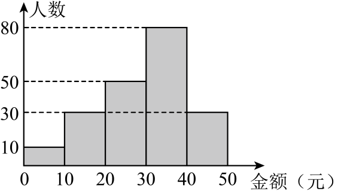
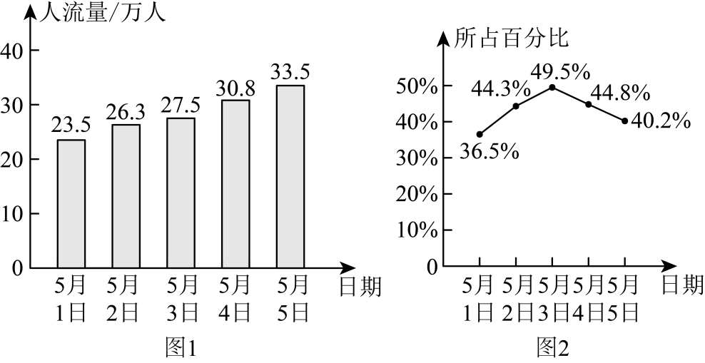
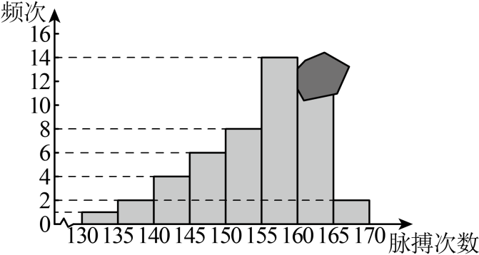
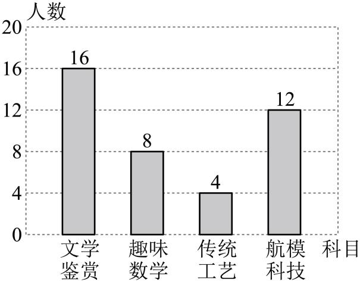
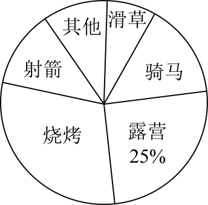
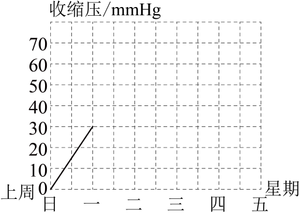
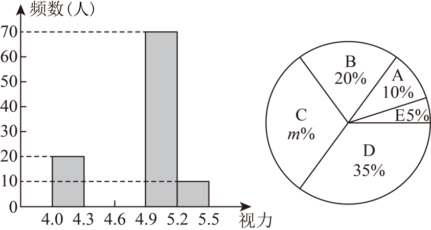
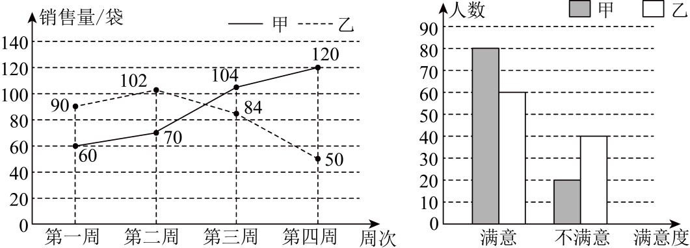
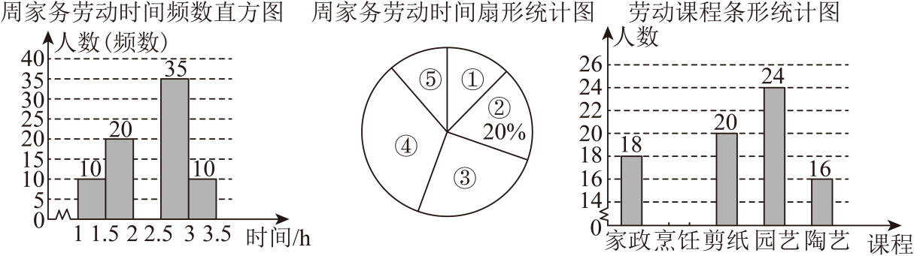

第六章 数据的收集与整理·培优卷
【北师大版2024】
时间：120分钟 满分：120分
姓名：___________班级：___________考号：___________
考卷信息：
本卷试题共24题，单选10题，填空6题，解答8题，满分120分，限时120分钟，本卷题型针对性较高，覆盖面广，选题有深度，可量化学生的掌握程度！
一、选择题（本大题共10小题，每小题3分，满分30分）
1．（25-26八年级上·江苏无锡·期中）下列调查中，适宜采用普查方式的是（ ）
A．调查一批新型节能灯泡的使用寿命
B．调查常熟市中小学生的课外阅读时间
C．对全市中学生观看电影《厉害了，我的国》情况的调查
D．对卫星“张衡一号”的零部件质量情况的调查
2．（24-25七年级下·云南丽江·期末）为了解某校七年级800名学生的期中数学测试成绩，调查小组随机抽取了200名学生的期中数学测试成绩进行调查，以下说法正确的是（ ）
A．七年级800名学生是总体 B．每名学生是个体
C．从中抽取的200名学生是样本 D．样本容量是200
3．（25-26八年级上·全国·课后作业）当前，“低头族”已成为热门话题之一，小颖为了了解路边行人边走路边低头看手机的情况，她应调查的对象是（ ）
A．一定数量的某学校的学生 B．一定数量的路边行走的学生
C．一定数量的图书馆里看书的人 D．一定数量的路边行走的路人
4．（24-25七年级上·四川成都·期末）下列古诗词中，涉及到的数据主要是定性数据的是（ ）
A．飞流直下三千尺，疑是银河落九天； B．忽如一夜春风来，千树万树梨花开；
C．锦瑟无端五十弦，一弦一柱思华年； D．取友但论诗好恶，逢人不说位高卑．
5．（24-25七年级下·全国·单元测试）期中调研日期为“2025年04月20日”，日期中出现的频率相同的数字是（ ）
A．0和4 B．0和5 C．2和4 D．0和2
6．某校为了了解学生在校午餐所需的时间，抽取了20名学生在校午餐所需时间，获得如下的数据（单位：分）：12、12、15、11、16、18、19、18、20、18、18、20、28、22、30、20、15、16、21、16．若将这些数据以4分为组距进行分组，则组数是（ ）
A．4组 B．5组 C．6组 D．7组
7．某校组织全体学生进行义卖活动，从中抽取部分学生义卖所得金额制成如图所示的频数直方图，那么义卖所得金额在20—30元的人数占的百分比为（ ）

A．15% B．25% C．40% D．50%
8．（24-25七年级上·全国·课后作业）某学校即将开展趣味运动会，因此对学生们的兴趣爱好进行调查．调查结果发现，七年级某班学生中有8人喜欢足球，12人喜欢篮球，15人喜欢乒乓球，10人喜欢羽毛球，为了清楚地表示并比较喜欢各种球类活动的具体人数，应选用的统计图是（ ）
A．条形统计图 B．折线统计图 C．扇形统计图 D．无法确定
9．（2024·福建·模拟预测）糖类、脂类、蛋白质、矿物质、维生素和水是人体必需的六大营养物质，其中糖类、脂类和蛋白质属 于供能物质，水、矿物质和维生素是非供能物质．某种食物中的营养物质占比情况如扇形统计图 所示（“其他”既不是供能物质，也不是非供能物质），则下列判断正确的是（ ）

A．六大营养物质总占比为90%
B．蛋白质占比最多
C．供能物质比非供能物质总占比少14%
D．扇形统计图中，“蛋白质”对应的扇形圆心角度数为61.2°
10．（24-25七年级下·全国·单元测试）某景区在“五一”国际劳动节期间每日的人流量如图1所示，该景区的每日人流量占该地区每日总人流量的百分比如图2所示．下列说法错误的是（ ）

A．该景区的每日人流量占该地区总人流量的百分比先增加后减少
B．该景区在“五一”国际劳动节期间的每日人流量在逐日增加
C．该景区在5月3日人流量占该地区总人流量的百分比达到最高
D．该地区5月4日的总人流量比5月5日的总人流量多
二、填空题（本大题共6小题，每小题3分，满分18分）
11．（2025·江苏扬州·一模）为了估计鱼塘中鱼的数量，养鱼者先从鱼塘中捕获50条鱼，在每一条鱼身上做好标记后把这些鱼放归鱼塘，过了一段时间，待有标记的鱼完全混合于鱼群后，再从鱼塘中捕捞鱼．通过多次捕捞实验后，发现捕捞的鱼中有作记号的频率稳定在5%，据此可估计该鱼塘中鱼的条数为 ．
12．为了了解某厂生产的2000台冰箱的质量情况，把这2000台冰箱编上序号，然后用抽签的方法抽取100台，这种抽样方法是 ，这种抽样方法 (填“具有”或“不具有”)代表性．
13．（24-25六年级上·山东泰安·阶段练习）学习委员调查本班学生一周内课外阅读情况，按照阅读时间进行统计，结果如表：
阅读时间 | 2小时以下 | 2~4小时 | 4小时以上 |
人数 | 20 | 16 | a |
百分比 | b | c | 25% |
则表中a的值为 ．
14．（24-25七年级上·云南保山·期末）如图，为了解800m跑后学生心率的分布情况，体育老师统计了全班48名学生800m赛跑后一分钟的脉搏情况，并根据收集的数据画出了频数分布直方图．则被阴影部分遮住的小长方形的高表示的频数是 ．

15．在频数分布直方图中，有11个小长方形，若中间一个小长方形的面积等于其它10个小长方形面积和的14，频数分布直方图中有150个数据，则中间一组的频数为 ．
16．（24-25七年级下·全国·单元测试）下图是根据某中学为山区儿童购买图书捐款的情况而制作的统计图，已知该校在校学生3000人，请根据统计图计算该校共捐款 元．

三、解答题（本大题共8小题，满分72分）
17．（6分）（24-25八年级下·河北唐山·期末）某校拟开设四门校本课程供学生选择：文学鉴赏，趣味数学，传统工艺，航模科技．为了解该校八年级600名学生对四门校本课程的选择意向，张老师做了以下工作：
①随机收集八年级40名学生对四门课程的选择意向；
②绘制统计图来表示学生对这四门课程的选择意向；
③整理这40名学生的选择意向并绘制统计表；
④结合统计图分析学生对这四门课程的选择意向．
请根据上述信息解答下列问题：
(1)下面对张老师的工作步骤排序正确的是（ ）
A．①②③④ B．①③②④ C．②①③④ D．③②①④
(2)张老师采用的调查方式是______（填：“普查”或“抽样调查”）
(3)如图，张老师绘制的40名学生所选科目的条形统计图．假设全年级每位学生都做出了选择，且只选择了一门课程．若学校规定每个班级不超过40人，请你根据图中信息，估计该校八年级至少应该开设几个趣味数学班．

18．（6分）乌蒙大草原位于贵州省六盘水市盘州市乌蒙镇与坪地彝族乡境内，当地人称之为“坡上草原”，景区总面积178平方公里．春天，这里的杜鹃花海美得不可方物，可以去这里踏青赏花；夏天，这里气温平均17°C，是最佳的避暑胜地．草原上可以进行各种户外活动，是暑假旅游的绝佳选择．为了迎接暑假，了解游客爱好，更好的服务好前来旅游的客人，景区某工作人员在一段时间内，随机抽取了部分前来旅游的游客对喜欢的户外活动项目进行问卷调查，并对调查结果进行整理（调查问卷全部收回，每位游客只能选填一种喜欢的项目），绘制成下面两幅不完整的图表：请根据图表中提供的信息回答下列问题：
喜欢各种户外活动的游客统计表
项目 | 频数 |
滑草 | a |
骑马 | 150 |
露营 | 250 |
烧烤 | 300 |
射箭 | 120 |
其它 | 100 |
喜欢各种户外活动的游客分布情况

(1)本次发放的调查问卷为___________份，喜欢滑草的游客人数为___________人；
(2)在扇形统计图中，喜欢烧烤活动的游客人数所对应的圆心角度数为___________．
(3)若某段时间内接待的游客为100000人次，请估计这100000人中喜欢射箭的游客人数．
19．（8分）（2025·江苏镇江·一模）随着移动终端设备的升级换代，手机已经成为我们生活中不可缺少的一部分，为了解中学生在假期使用手机的情况(选项：A、和同学亲友聊天；B、学习；C、购物；D、游戏；E、其它)，五一节后某中学在全校范围内随机抽取了若干名学生进行调查，得到下表(部分信息未给出)：
选项 | A | B | C | D | E |
频数 | 10 | n | 5 | p | 5 |
频率 | m | 0.2 | 0.1 | 0.4 | 0.1 |
根据以上信息解答下列问题：
(1)这次被调查的学生有多少人？
(2)求表中m，n，p的值．
(3)若该中学约有1000名学生，估计全校学生中利用手机购物或玩游戏的共有多少人？并根据以上调查结果，就中学生如何合理使用手机给出你的一条建议．
20．（8分）（25-26七年级上·河南驻马店·阶段练习）一位患者每天下午需要测量一次血压，下表是该患者星期一至星期五收缩压的变化情况，该患者上个星期日的收缩压为160mmHg．（“+”表示收缩压比前一天上升，“−”表示收缩压比前一天下降）
星期 | 一 | 二 | 三 | 四 | 五 |
收缩压的变化/mmHg | +30 | −20 | +15 | +5 | −20 |

(1)请算出该患者星期五的收缩压（要求先列式后计算）
(2)以上个星期日的收缩压为O点，请把折线统计图补充完整
(3)若收缩压大于或等于180mmHg为重度高血压，该患者本周哪几天的血压属于这个范围
21．（10分）（25-26八年级上·广西南宁·开学考试）某市在今年对全市16000名七年级学生进行了一次视力抽样调查，并根据统计数据，制作了统计表和如图所示的统计图．
组别 | 视力 | 频数 |
A | 4.0≤x<4.3 | 20 |
B | 4.3≤x<4.6 | a |
C | 4.6≤x<4.9 | b |
D | 4.9≤x<5.2 | 70 |
E | 5.2≤x<5.5 | 10 |

请根据图表信息回答下列问题：
(1)本次视力抽样调查抽取了______人，表中a=______，b=______，m=_____．
(2)请补全频数分布直方图；
(3)若视力在4.9以上（含4.9）均属正常，根据上述信息估计该市今年七年级的学生视力正常的大约有多少人．
22．（10分）（24-25七年级下·贵州贵阳·阶段练习）下面两个统计图反映的是某超市5月份甲、乙两种洗衣粉的销售情况和顾客满意度情况．

请根据图中提供的信息，解答下列问题：
(1)从折线图可以看出：
①甲种洗衣粉在第 周的销售量达到最大，是 袋；
②乙种洗衣粉在第 周的销售量达到最大，是 袋．
(2)从折线图可以看出 种洗衣粉的销售量在整体提升，从条形图可以看出 种洗衣粉的满意度不好．（均填“甲”或“乙”）
(3)通过观察两个统计图，发现顾客满意度和洗衣粉的销售量有何关系？
23．（12分）（25-26九年级上·吉林长春·月考）为了解社区居民使用共享单车时间情况，调查组连续两年开展调查．
(1)调查组2024年随机对该社区选择共享单车出行的部分居民进行了调研，获得了他们每周使用共享单车时间（单位：分钟）的数据，并将收集到的数据进行整理和描述，结果如图：
组别 | 使用时间（分钟） | 频数（人数） |
第1组 | 40≤x<60 | 7 |
第2组 | 60≤x<80 | a |
第3组 | 80≤x<100 | 49 |
第4组 | 100≤x<120 | 28 |
第5组 | 120≤x<140 | 21 |

①本次调研，随机抽取 名社区居民进行调查；
②请补全频数分布直方图；
③若该社区共有1400位居民选择使用共享单车出行，请你估计每周使用共享单车的时间不小于1小时的居民有多少人；
(2)调查组2025年对坚持选择共享单车出行的20名社区居民进行了跟踪调查，绘制了统计图（如图）．

①薛阿姨2025年每周使用共享单车时间比2024年的使用时间 （填“多”或“少”）；
②将这20名居民中2025年每周使用共享单车时间超过2024年使用时间的人数记为m，其余人数记为n，则m n（填“>”、“=”、<”）．
24．（12分）（25-26八年级上·广西南宁·期中）某希望中学做了如下表的调查报告（不完整）：
调查目的 | 了解本校学生：（1）周家务劳动的时间；（2）最喜欢的劳动课程 |
调查方式 | |
调查对象 | 部分七年级学生（该校所有学生周家务劳动时间都在1~3.5h范围内） |
调查内容 | （1）你的周家务劳动时间（单位：h）是①1~1.5②1.5~2③2~2.5④2.5~3⑤3∼3.5 （2）你最喜欢的劳动课程是（必选且只选一门） A．家政 B．烹饪 C．剪纸 D．园艺 E．陶艺 |
调查结果 |  |
结合调查信息，回答下列问题：
(1)①本次调查的方式是__________（填“全面调查”或“抽样调查”）；
②参与本次问卷调查的学生人数为多少人？
(2)在扇形统计图中，第④组所对应扇形的圆心角的度数是多少？
(3)若该校七年级学生共有800人，请估计最喜欢“烹饪”课程的学生人数．